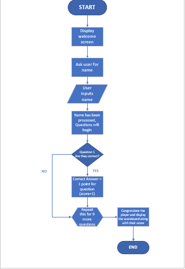
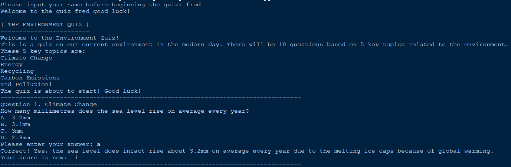
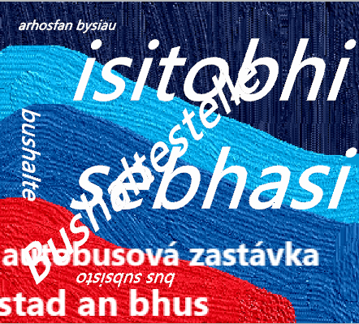
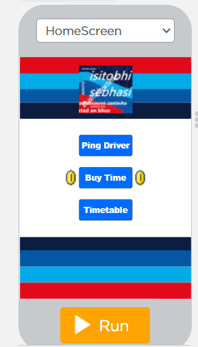
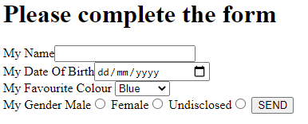
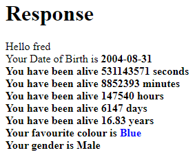

September 2020
Our first project in our first week as college students back in September 2020, was creating an environmental quiz. It consisted of 10 questions based on topics based around the environment. These topics consisted of: Climate Change, Energy, Recycling, Carbon Emissions & Pollution. The original outline for the code was for it to have a working scoreboard at the end of it. However due to time constraints, I didn't add the scoreboard. But overall it works very well, just wish that I could've added more features to it.
 This here is my flowchart for my code. As you can see it is fairly simple, due to the simplicity of the program. And also what we have above is the first question being ran. As you can see the question gives out 4 multiple choices. I got the answer correct to display what happens if you do get the answer correct. My score is now 1 because of this, if I got the answer wrong then I would've stayed on 0.
December 2020
In December 2020, we took part in the "Apps for Good" competition. Me & my partner came up with the idea of a "Bus pinging service". The whole concept of the idea was that if you know that you are going to be running late for the bus then you can use the app to ping the driver in order to delay the bus by a couple of minutes. You would obviously have to pay for these "tokens", 1 token would equal 1 minute.
We came up with the idea because, we believed that simply just missing a bus could be very consequential. It could result in job loss just by simply missing the bus, so that is why we came up with the idea so that we could benefit those who are effected by the simple situation of just missing a bus.
March 2021
When we came back from the 3rd lockdown in March 2021, we did our first Employer Set Project as a practice. It was based on a Car Dealership and their Finance Calculator.
April 2021
In April we did our second ESP however, this time we did all 4 tasks. We had to create a flowchart, pseudocode, code for the project, a spreadsheet for the finances and weekly planning and more.
June 2021
We began using MySQL & PHP to create a whole range of mini projects. We created login systems, to do lists, personal information entries and much more! Below shows some examples of some of the work that we produced with our new MySQL & PHP skills.
 